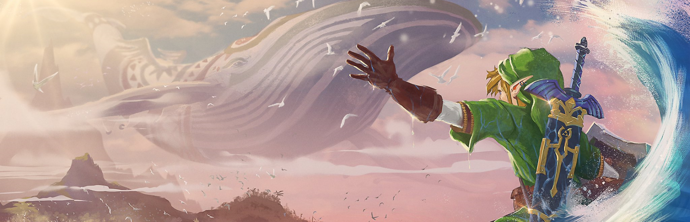

The Legend of Zelda

The Legend of Zelda series, developed and published by Nintendo, is an iconic action-adventure video game franchise that first emerged in 1986. Renowned for its innovative gameplay, richly detailed game worlds, and enduring protagonist, the series has garnered a passionate fanbase over the decades. Each installment follows the adventures of the courageous hero, Link, as he embarks on a quest to save the kingdom of Hyrule and its beloved princess, Zelda, from the clutches of the malevolent force, often embodied by the recurring antagonist, Ganon. The series is praised for its groundbreaking game design, skillfully blending exploration, puzzle-solving, and combat, while incorporating unique items and abilities that have become synonymous with the franchise. Featuring an enchanting and memorable soundtrack, composed primarily by the legendary Koji Kondo, the Legend of Zelda series has left an indelible mark on the gaming world and continues to inspire and captivate players with each new installment.
Pros
- Innovative gameplay: The series has consistently pushed the boundaries of action-adventure game design, introducing new mechanics and gameplay elements that have influenced the broader gaming industry.
- Engaging puzzles: The Legend of Zelda games are known for their cleverly designed puzzles and dungeons, which challenge players' problem-solving skills and provide a satisfying sense of accomplishment.
- Memorable characters: The series features enduring and beloved characters, such as the courageous hero Link, the wise Princess Zelda, and the menacing villain Ganon, who have become iconic figures in gaming culture.
- Richly detailed worlds: The Legend of Zelda games are set in intricately designed game worlds, with deep lore and a sense of history that encourage exploration and discovery.
- Iconic music: The series is renowned for its captivating and memorable soundtracks, which have become an integral part of the gaming experience and contribute to the series' overall charm.
- High production values: Nintendo is known for its commitment to quality, ensuring that each game in the series features polished graphics, sound design, and gameplay.
- Wide appeal: The series appeals to a diverse audience, with its accessible gameplay and engaging storylines, making it a popular choice for players of all ages and skill levels.
Cons
- Formulaic structure: Some critics argue that the series can be repetitive, with similar plot structures, dungeon designs, and gameplay elements featured across multiple games.
- Limited voice acting: While newer installments have introduced voice acting, the series has historically relied on text-based dialogue, which some players may find less immersive than fully voiced narratives.
- Difficulty spikes: Some Legend of Zelda games feature difficulty spikes or particularly challenging segments, which can be frustrating for players who struggle with certain aspects of the gameplay.
- Nostalgia-driven expectations: The series' long-standing reputation and fanbase may create high expectations for new installments, leading to disappointment if a game fails to meet those expectations or deviates significantly from past titles.
- Accessibility: Some older games in the series may not be readily available on modern gaming platforms, making it difficult for new players to experience the entire series.
- Focus on console gaming: The series has been primarily developed for Nintendo consoles, which may be a drawback for players who primarily game on other platforms.
- Linear gameplay: Some entries in the series have more linear gameplay, which may be a disadvantage for players who prefer open-world or non-linear experiences. However, recent titles like "The Legend of Zelda: Breath of the Wild" have moved toward a more open-world approach.